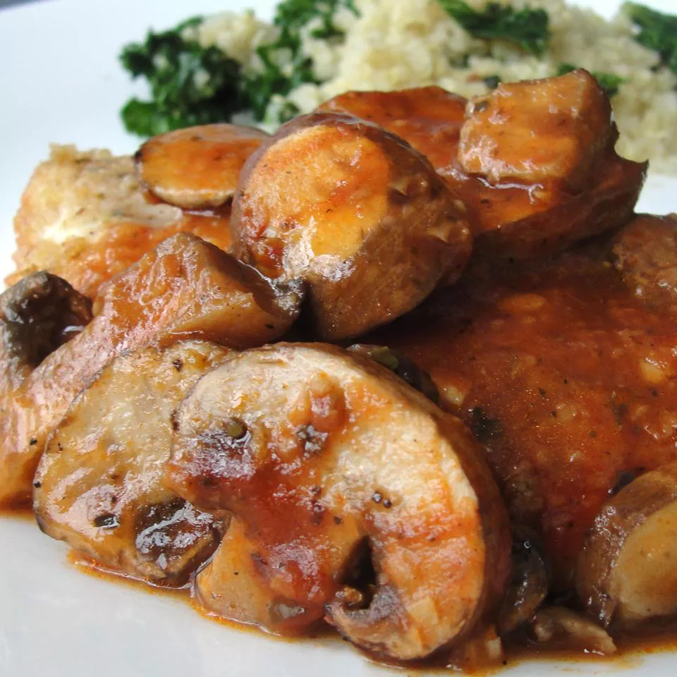

The tasty Chicken in a pot
I just made this tonight, and it tasted great! It's a very simple dish, but you'd never know it by the complex flavor, reviewer Rhea says.
This dish uses just one skillet to prepare. Quick, easy and delicious. Tomato paste and chicken broth combine to make a tasty sauce. Garnish with fresh parsley.
Ingredients
- ¾ cup chicken broth
- 1 ½ tablespoons tomato paste
- ¼ teaspoon ground black pepper
- ½ teaspoon dried oregano
- ⅛ teaspoon salt
- 1 clove garlic, minced
- 4 boneless, skinless chicken breast halves
- 3 tablespoons dry bread crumbs
- 2 teaspoons olive oil
- 2 cups fresh sliced mushrooms
Directions for preparation
- In a medium bowl, combine the broth, tomato paste, ground black pepper, oregano, salt and garlic. Mix well and set aside.
- Dredge the chicken in the bread crumbs, coating well. Heat the oil in a large skillet over medium high heat. Saute the chicken in the oil for 2 minutes per side, or until lightly browned.
- Add the reserved broth mixture and the mushrooms to the skillet and bring to a boil. Then cover, reduce heat to low and simmer for 20 minutes. Remove chicken and set aside, covering to keep it warm.
- Bring broth mixture to a boil and cook for 4 minutes, or until reduced to desired thickness. Spoon sauce over the chicken and serve.
Return to top
Return to main page